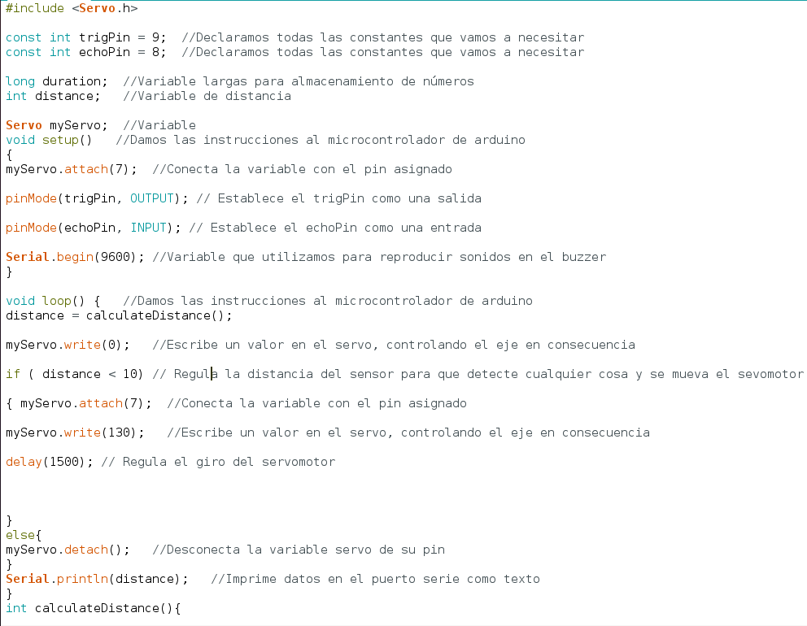
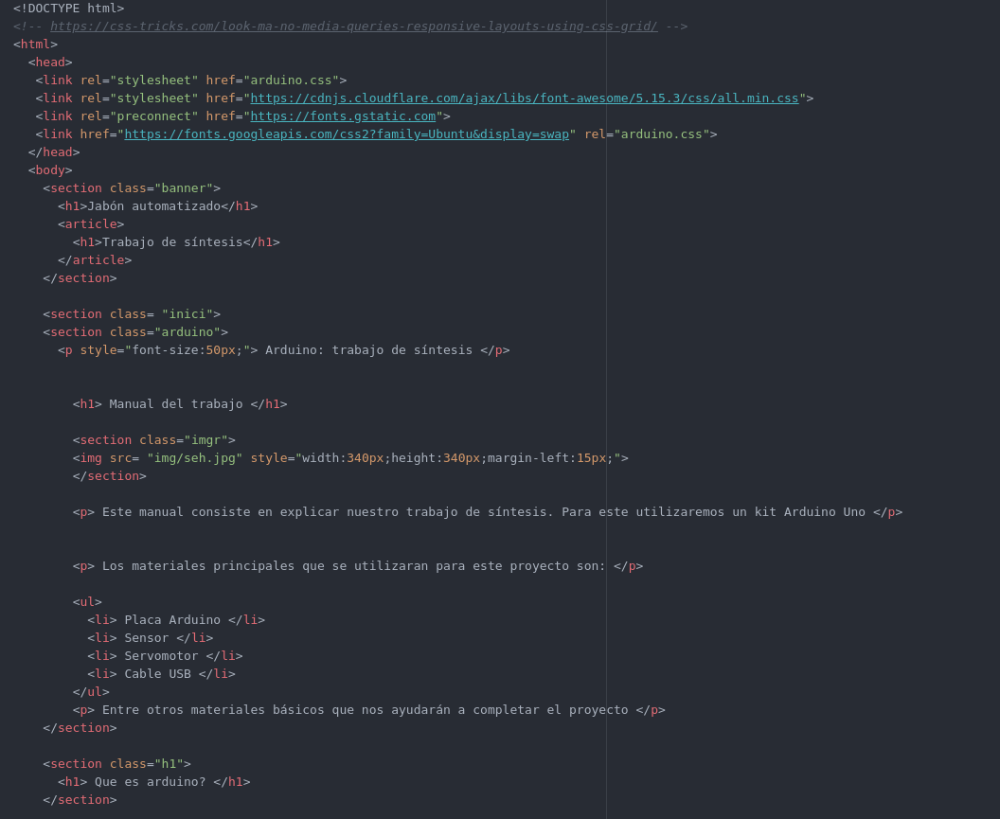

Anexos
Aqui dejamos nuestras páginas web que hemos subido a github
Pagina de Jordi: https://jordii-kety.github.io/arduinoproyecto/
Pagina de Sergio: https://sergiio086.github.io/Pagina-web/index.html
Este es el codigo del proyecto subido a github: https://github.com/jordii-kety/codigoarduino/blob/main/codigo.ino
Video de youtube donde se explica cómo se hace el proyecto: https://www.youtube.com/watch?v=2LX9XmnNr5Q&ab_channel=SergioJimenezGalvan
Este es el código que hace que funcione nuestro proyecto. Esta todo detallado de qué significa cada línea de código
Estas imágenes son el diseño de la caja desde la aplicación tinkercad. Estos objetos están hechos a medida.
En esta imagen se ven tres agujeros que será por donde pasarán los cables del servomotor y sensor y el por último el agujero más grande será por donde el servomotor gira para que no toque con la caja.

Es la misma pieza vista por diferente ángulo. El agujero que tiene en la pared es para el conector de la placa que irá dentro

Esta pieza es la que tapara el jabón con un agujero en media para que salga el sensor y pueda detectar la mano.

Esta imagen es un conjunto en general de todo y como se vería

Este es un pequeño trozo de la página HTML que hemos hecho
